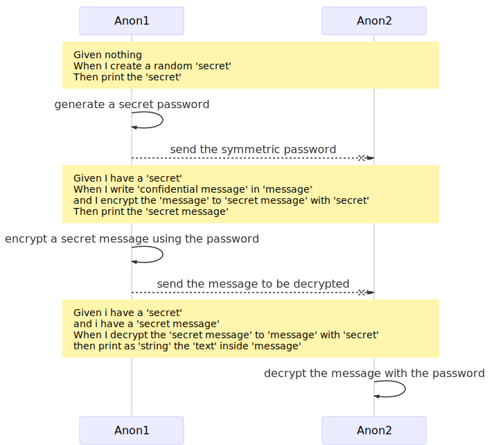
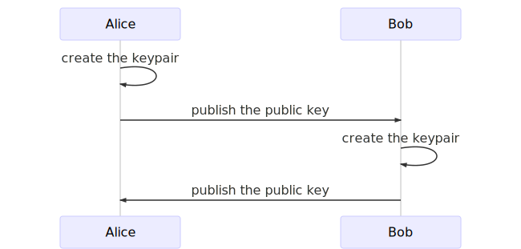
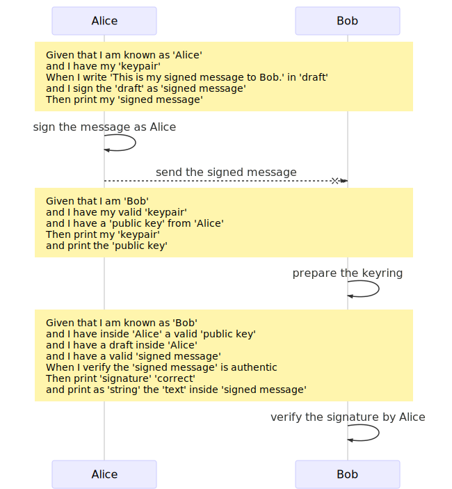
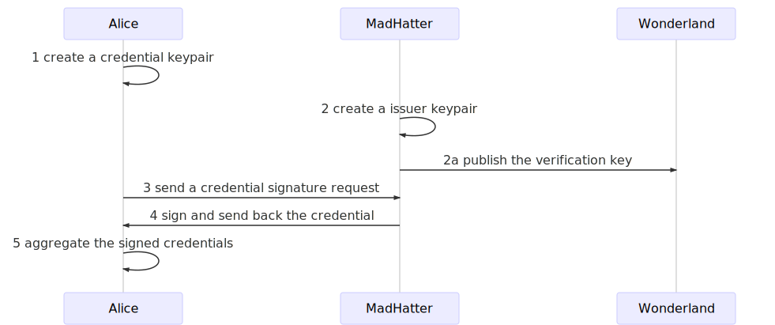

Smart contracts in human language
Zenroom is software inspired by the language-theoretical security research and it allows to express cryptographic operations in a readable domain-specific language called Zencode.
For an explanation of the innovation brought by Zencode see this blog post: Smart contracts for the English speaker.
Now to learn this very simple language, lets dive into some examples.
Keep in mind that statements in yellow boxes are actual Zencode being executed.
Memory model
Zencode contracts operate in 3 phases:
- Given - validates the input
- When - processes the contents
- Then - prints out the results
The 3 separate blocks of code also correspond to 3 separate memory areas, sealed by some security measures.

All data processed has first to pass the validation phase according to scenario specific data schemas.
Good Practice: start your Zencode noting down the Zenroom version you are using!
rule check version 1.0.0
Given
Data provided as input (from data and keys) is all imported automatically from JSON or CBOR binary formats.
Here below a dense representation of the main operations available.
Self introduction (affects "my" statements)
given: - {given: nothing} # checks input is really empty - {given: 'I introduce myself as '''''} # open a section { "WhoAmI": ... } - {given: 'I am known as '''''} # same as above - {given: 'I am '''''} # same as above
Import given data
- {given: 'I have a '''''} # import data named without validation - {given: 'I have my '''''} # import data named under my section without validation - {given: 'I have inside '''' a '''''} # import data from inside a section - {given: 'I have a '''' inside '''''} # different statement, invert order of arguments - {given: 'I have a '''' in '''''} # courtesy synonyms ... - {given: 'I have a '''' from '''''} # ... are the same
Import only "valid" data (schemas are set by the "scenario")
- {given: 'I have a valid '''''} # import data named validated with same name schema - {given: 'I have my valid '''''} # import data named validated under my section - {given: 'I have inside '''' a valid '''''} # import validated data from inside a section - {given: 'I have a valid '''' inside '''''} # same as above, inverted order of arguments - {given: 'I have a valid '''' in '''''} # same as above - {given: 'I have a valid '''' from '''''} # same as above (courtesy synonyms) - {given: 'the '''' is valid'} # validate an already imported data object
Settings:
rule input encoding [ url64 | base64 | hex | bin ] rule input format [ json | cbor ]
When
Processing data is done in the when block. Also scenarios add statements to this block.
Without extensions, these are the basic functions available
when: - {when: 'I append '''' to '''''} - {when: 'I write '''' in '''''} - {when: 'I set '''' to '''''} - {when: 'I create a random '''''} - {when: 'I create a random array of '''' elements'} - {when: 'I create a random '''' bit array of '''' elements'} - {when: 'I set '''' as '''' with '''''} - {when: 'I append '''' as '''' to '''''} - {when: 'I write '''' as '''' in '''''}
Then
Output is all exported in JSON or CBOR
then: - {then: 'print '''' '''''} - {then: 'print all data'} - {then: 'print my data'} - {then: 'print my data'} - {then: 'print my '''''} - {then: 'print as '''' my '''''} - {then: 'print my '''' as '''''} - {then: 'print the '''''} - {then: 'print as '''' the '''''} - {then: 'print as '''' the '''' inside '''''}
Settings:
rule output encoding [ url64 | base64 | hex | bin ] rule output format [ json | cbor ]
Symmetric encryption
This is a simple tecnique to hide a secret using a common password known to all people.
# a `message` must be set and will be used as encryption input # if a `header` is set will authenticate to destination - {when: 'I encrypt the message with '''''} - {when: 'I decrypt the secret message with '''''} # encryption output is returned in `secret message`
Let's imagine I want to share a secret with someone and send secret messages encrypted with it:

I will need 3 Zencode contracts executed at different times:
1. I generate a strong random secret
rule check version 1.0.0 Scenario simple: Generate a random secret Given nothing When I create a random 'secret' Then print the 'secret'
-> then save the secret output and send it
2. I encrypt a message using this secret
rule check version 1.0.0 Scenario simple: Encrypt a message with the secret Given I have a 'secret' When I write 'a very short but very very confidential message' in 'message' and I write 'this is the header' in 'header' and I encrypt the message with the secret Then print the 'secret message'
-> then save the secret message and send it
3. Who has my secret can decrypt the secret message
rule check version 1.0.0 Scenario simple: Decrypt the message with the secret Given i have a 'secret' and i have a valid 'secret message' When I decrypt the secret message with the secret Then print as 'string' the 'text' inside 'message' and print as 'string' the 'header' inside 'message'
Of course the secret must be known by all participats and that's the dangerous part, since it could be stolen at the moment is told.
We solve this problem using public-key cryptography, also known as a-symmetric encryption.
Asymmetric encryption
To solve this problem we have asymmetric encryption (or public key cryptography) which relies on the creation of keypairs (public and private) both by Alice and Bob.
Fortunately its pretty simple to do using Zencode.
Key generation and exchange
- {when: 'I create my new keypair'} - {when: 'I generate my keys'}

After both Alice and Bob have their own keypairs and they both know each other public key we can move forward to do asymmetric encryption and signatures.
1.a Alice keygen
Rule check version 1.0.0 Scenario 'simple': Alice generate a keypair Given that I am known as 'Alice' When I create my new keypair Then print my data
2.a Alice pubkey
Rule check version 1.0.0 Scenario 'simple': Alice publishes her public key Given that I am known as 'Alice' and I have my valid 'public key' Then print my data
1.b Bob keygen
Rule check version 1.0.0 Scenario 'simple': Bob generate a keypair Given that I am known as 'Bob' When I create my new keypair Then print my data
2.b Bob pubkey
Rule check version 1.0.0 Scenario 'simple': Bob publishes his public key Given that I am known as 'Bob' and I have my valid 'public key' Then print my data
Public-key Encryption (ECDH)
# if a 'header' is set will authenticate to destination - {when: 'I encrypt the '''' to '''' for '''''} - {when: 'I decrypt the '''' from '''' to '''''}

1. Alice encrypts the message using Bob's public key
Rule check version 1.0.0 Scenario 'simple': Alice encrypts a message for Bob Given that I am known as 'Alice' and I have my valid 'keypair' and I have a valid 'public key' from 'Bob' When I write 'This is my secret message.' in 'message' and I write 'This is the header' in 'header' and I encrypt the message for 'Bob' Then print the 'secret message'
2. Bob prepares a keyring with Alice's public key
Rule check version 1.0.0 Scenario 'simple': Bob gathers public keys in his keyring Given that I am 'Bob' and I have my valid 'keypair' and I have a valid 'public key' from 'Alice' Then print my 'keypair' and print the 'public key'
3. Bob decrypts the message using Alice's public key
Rule check version 1.0.0 Scenario 'simple': Bob decrypts the message from Alice Given that I am known as 'Bob' and I have my valid 'keypair' and I have a valid 'public key' from 'Alice' and I have a valid 'secret message' When I decrypt the secret message from 'Alice' Then print as 'string' the 'message' and print as 'string' the 'header' inside 'secret message'
In this basic example the session key for encryption is made combining the private key of Alice and the public key of Bob (or viceversa).
When I write 'my secret for you' in 'message' and I write 'an authenticated message' in 'header'
The decryption will always check that the header hasn't changed, maintaining the integrity of the string which may contain important public information that accompany the secret.
Public-key Signature (ECDSA)
- {when: 'I sign the '''' as '''''} - {when: 'I verify the '''' is authentic'}

Here we continue assuming that the keyrings are already prepared with public/private keypairs and the public keypair of the correspondent.
1. Alice signs a message for Bob
Rule check version 1.0.0 Scenario 'simple': Alice signs a message for Bob Given that I am known as 'Alice' and I have my valid 'keypair' When I write 'This is my signed message to Bob.' in 'draft' and I make the signature of the 'draft' Then print my 'signature' and print my 'draft'
1. Bob verifies the signed message from Alice
rule check version 1.0.0 Scenario 'simple': Bob verifies the signature from Alice Given that I am known as 'Bob' and I have inside 'Alice' a valid 'public key' and I have a valid 'signature' inside 'Alice' and I have a 'draft' inside 'Alice' When I verify the 'signature' of the 'draft' is by 'Alice' Then print 'signature' 'correct' and print as 'string' the 'draft'
In this example Alice uses her private key to sign and authenticate a message. Bob or anyone else can use Alice's public key to prove that the integrity of the message is kept intact and that she signed it.
Zero Knowledge Proofs
One powerful feature of Zenroom is the implementation of the Coconut crypto scheme. This novel scheme supports several features based on pairing elliptic curve arithmetics and in particular:
- non-interactive zero knowedge proofs (also known as ZK, ZKP or ZK-Snarks)
- threshold credentials with multiple decentralised issuers
- homomorphic encryption for numeric counters
These are all very useful features for architectures based on the decentralisation of trust, typical of DLT and blockchain based systems, as well for off-line and non-interactive authentication.
The Zencode language leverages two main use cases of this crypto scheme and two more will be implemented in the future.
- Attribute Based Credentials (ABC) where issuer verification keys represent specific credentials
- A Petition system based on ABC and homomorphic encryption
- (WIP) Anonymous proxy validation scheme
- (WIP) Token thumbler to privately transfer numeric assets
The main feature of ZKP based cryptography is that one can use credentials to create untreaceable public proofs for authenticating or signing a petition etc.
The validity of ZK proofs can be witnesses by anyone without even knowing who is being authenticated: just knowing the proof and the credential (the public verification key of the credential issuer).
Attribute Based Credentials

Let's now imagine 3 different subjects for our scenarios:
- Wonderland is an open space, all inhabitants can witness the validity of credential proofs
- Alice just arrived in Wonderland: she will make credential signature requests, hold the signed credentials and use them to produce proofs
- Mad Hatter is a well known credential issuer in Wonderland: he receives credential signature requests and decides if to sign them. Once signed, credentials can be used to produce proofs.
Credential proofs are different at every use, so Alice can use signed credentials in her possession to produce proofs, but cannot be followed by her trail of proofs. Alice can produce an infinite number of them and leave them around: like in a chest at the entrance of a room, for anyone to witness their validity without even meeting Alice or knowing who she is.

1- Alice generates her credential keypair
Scenario coconut Given that I am known as 'identifier' When I create my new keypair Then print my data
2- MadHatter generates an issuer keypair
Scenario coconut Given that I am known as 'issuer identifier' When I create my new issuer keypair Then print my 'issuer keypair'
2a MadHatter publishes the verification key
Scenario coconut Given that I am known as 'issuer identifier' and I have my valid 'ca verify' When I publish my issuer verification key Then print my data
3- Alice sends her credential signature request
Scenario coconut Given that I am known as 'identifier' and I have my valid 'credential keypair' When I create a credential signature request Then print my 'credential signature request'
4- MadHatter decides to sign a credential signature request
Scenario coconut Given that I am known as 'issuer_identifier' and I have my valid 'issuer keypair' and I have a valid 'credential signature request' When I sign the credential Then print the 'credential' and print the 'ca verify'
5- Alice receives and aggregates the signed credential
Scenario coconut Given that I am known as 'identifier' and I have my valid 'credential keypair' and I have a valid 'credential' When I aggregate the credential in 'credentials' Then print my 'credentials' and print my 'credential keypair'
At this point Alice is in possession of credentials allowing her to produce a proof any time she wants.
6- Alice show the credential proof
Scenario coconut Given that I am known as 'identifier' and I have my valid 'credential keypair' and I have a valid 'ca_verify' from 'issuer identifier' and I have my valid 'credentials' When I aggregate all 'ca verify' and I create a credential proof Then print the 'credential proof'
7- Anyone can verify the credential proof
Scenario coconut Given that I have a valid 'ca_verify' from 'issuer_identifier' and I have a valid 'credential proof' When I aggregate all 'ca_verify' and I verify the credential proof is correct Then print 'Success' 'OK' as 'string'
Full list of statements
when: - {when: 'I append '''' to '''''} - {when: 'I write '''' in '''''} - {when: 'I set '''' to '''''} - {when: 'I create a random '''''} - {when: 'I create a random array of '''' elements'} - {when: 'I create a random '''' bit array of '''' elements'} - {when: 'I set '''' as '''' with '''''} - {when: 'I append '''' as '''' to '''''} - {when: 'I write '''' as '''' in '''''} coconut: - {when: 'I create my new credential keypair'} - {when: 'I create my new credential request keypair'} - {when: 'I create my new keypair'} - {when: 'I create my new issuer keypair'} - {when: 'I create my new authority keypair'} - {when: 'I create a credential signature request'} - {when: 'I sign the credential'} - {when: 'I aggregate the credential in '''''} - {when: 'I aggregate all '''''} - {when: 'I create a credential proof'} - {when: 'I verify the credential proof is correct'} - {when: 'I create a petition '''''} - {when: 'I verify the new petition to be empty'} - {when: 'I create a petition signature '''''} - {when: 'I verify the signature proof is correct'} - {when: 'the petition signature is not a duplicate'} - {when: 'the petition signature is just one more'} - {when: 'I add the signature to the petition'} - {when: 'I create a petition tally'} - {when: 'I count the petition results'} simple: - {when: 'I create my new keypair'} - {when: 'I generate my keys'} - {when: 'I encrypt the message with the secret'} - {when: 'I decrypt the secret message with the secret'} - {when: 'I encrypt the message for '''''} - {when: 'I decrypt the secret message from '''''} - {when: 'I make the signature of the '''''} - {when: 'I verify the '''' is authentic'} given: - {given: nothing} - {given: 'I introduce myself as '''''} - {given: 'I am known as '''''} - {given: 'I am '''''} - {given: 'I have a '''''} - {given: 'I have my '''''} - {given: 'I have a valid '''''} - {given: 'I have my valid '''''} - {given: 'I have a '''' inside '''''} - {given: 'I have a valid '''' inside '''''} - {given: 'I have a '''' from '''''} - {given: 'I have a valid '''' from '''''} - {given: 'the '''' is valid'} then: - {then: 'print '''' '''''} - {then: 'print '''' '''' as '''''} - {then: 'print all data'} - {then: 'print my data'} - {then: 'print all my data'} - {then: 'print my '''''} - {then: 'print as '''' my '''''} - {then: 'print my '''' as '''''} - {then: 'print the '''''} - {then: 'print as '''' the '''''} - {then: 'print the '''' as '''''} - {then: 'print as '''' the '''' inside '''''} - {then: 'print the '''' as '''' inside '''''}